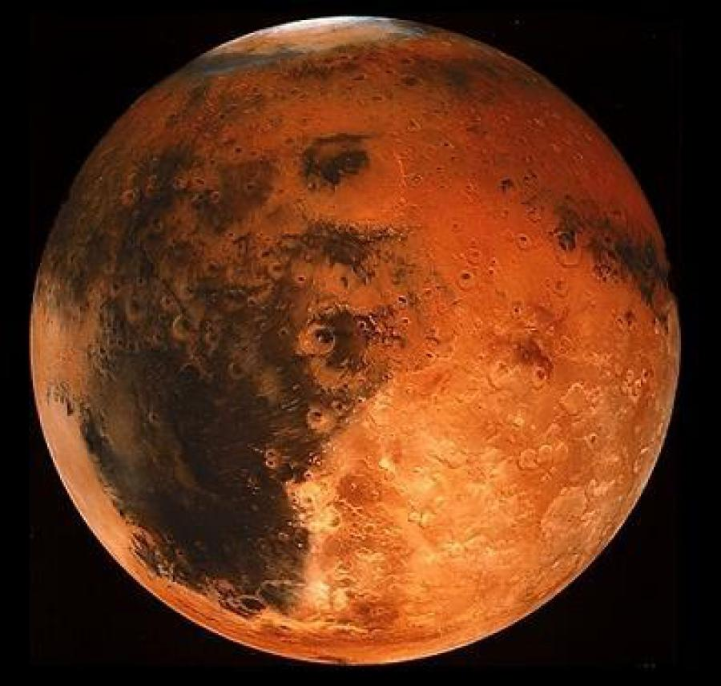
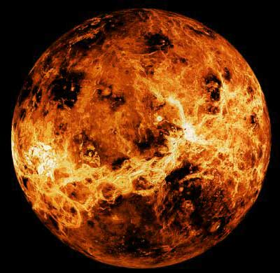
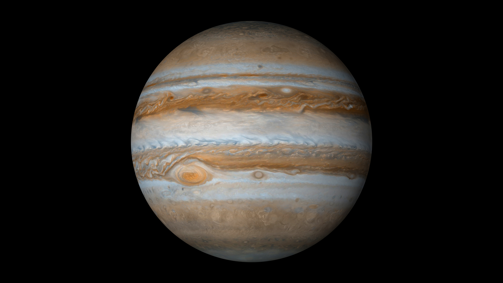
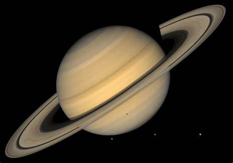

Mercury
Mercury is the closest planet to the Sun and the smallest in our solar system. It has no atmosphere, and its surface temperatures vary drastically between day and night.
Distance from Sun: 57.9 million km
Orbital Period: 88 Earth days
Moons: None

Venus
Venus is the second planet from the Sun and is known for its thick, toxic atmosphere. Its surface is hotter than any other planet in the solar system due to the greenhouse effect.
Distance from Sun: 108.2 million km
Orbital Period: 225 Earth days
Moons: None

Earth
Earth is the third planet from the Sun and the only one known to support life. It has a diverse climate, landscapes, and ecosystems.
Distance from Sun: 149.6 million km
Orbital Period: 365.25 Earth days
Moons: 1 (the Moon)
Mars
Mars is known as the Red Planet due to its reddish appearance caused by iron oxide on its surface. It has the largest volcano and canyon in the solar system.
Distance from Sun: 227.9 million km
Orbital Period: 687 Earth days
Moons: 2 (Phobos and Deimos)

Jupiter
Jupiter is the largest planet in our solar system, known for its Great Red Spot and powerful magnetic field. It has 79 known moons.
Distance from Sun: 778.5 million km
Orbital Period: 11.9 Earth years
Moons: 79

Saturn
Saturn is famous for its stunning ring system, which is the most developed among all the planets. It is the second-largest planet in our solar system.
Distance from Sun: 1.4 billion km
Orbital Period: 29.5 Earth years
Moons: 83 (including Titan, Rhea)

Uranus
Uranus is an ice giant with a unique tilt, which causes extreme seasons. Its atmosphere is mostly hydrogen and helium, with traces of methane giving it a blue color.
Distance from Sun: 2.9 billion km
Orbital Period: 84 Earth years
Moons: 27

Neptune
Neptune is known for its deep blue color and strong winds. It's the eighth planet from the Sun and has a very dynamic weather system.
Distance from Sun: 4.5 billion km
Orbital Period: 165 Earth years
Moons: 14